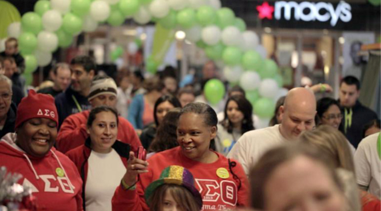
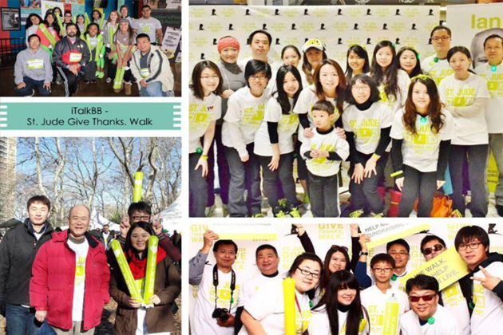
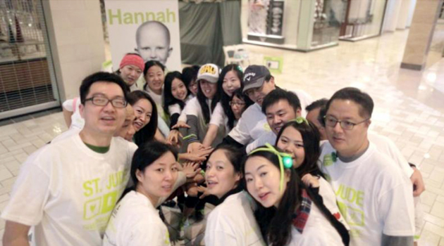
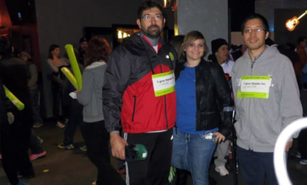
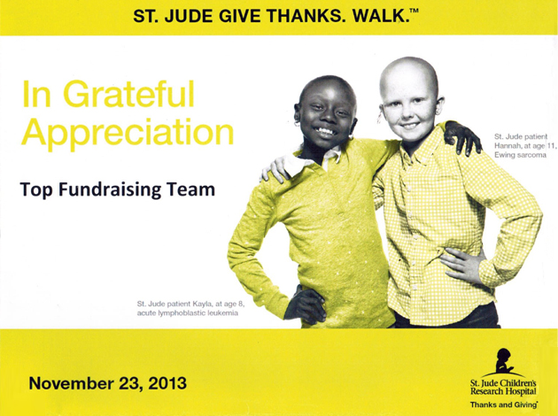

關愛患癌兒童 - St. Jude全國慈善遊行成功舉辦
2013年11月23日，周六，離感恩節還剩5天。
全美74座城市，上萬人走上街頭參加了St. Jude兒童研究及治療醫院的Give Thanks. Walk.遊行活動。雖然大部分的城市早已寒風侵肌，參加活動的民眾大多在清晨6點已經蓄勢待發，為呼籲捐助患癌兒童而聚在一起，準備完成全程5000米的遊行。
癌症，這個詞也許離你很遠。但當它降臨到任何一個家庭的頭上，將是泰山壓頂。 St. Jude是全美最大的為患癌兒童提供治療的非營利機構。該機構為患癌家庭提供免費的醫療救治，患者家屬無需為治療支付任何費用。該機構同時將其研究成果無償公佈。 St. Jude 所有的收入來源均來自社會善款，高達81%的善款全部用於疾病治療和研究。 為了幫助這些患癌兒童找到治癒方法並拯救他們的生命，iTalkBB美國的員工自發組織參加這一意義非凡的慈善遊行，紛紛解囊為救助孩子盡自己的一份力。幾乎同一時間，維吉尼亞、加利福尼亞、紐約、德克薩斯的近百名iTalkBB志願者出現在四地活動現場，為拯救患兒散播自己的愛心。
"Together, we make a difference" – Alan Chen在活動現場略微激動地只說了這麼一句話。 Alan是iTalkBB物流部門的老員工了，他給人最深的印像是常年穿的那件藍大褂，幾年來似乎不曾見他購置過新衣服。年近60的他得知一位患兒只剩最後3周生命的故事後，不禁老淚縱橫，隨即捐出$1,000美元。有人問他你確定要捐那麼多嗎，他只說"是啊，幫助小孩子嘛！"
那一天是Austin, TX有歷史記錄以來11月份最寒冷的一天，驟風急雨。 iTalkBB Austin 辦公室Billy參加完活動，寫道："我懷疑像這樣的天氣還會不會有人出現。但是真的有人來，而且有很多。"他見到一位被鋸了腿的患癌女孩出現在活動現場，並堅持走完了全程5000米。 Billy說："到最後我真的被感動了，我參加活動之前不知道會發生什麼，也不確定我自己是不是該去，但走完全程，我感到滿足，受到鼓舞，並且深感責任重大。謝謝iTalkBB組織我們參加如此有意義的社區活動。" （譯）
這樣的故事還有很多，人們用各種方式鼓舞著對方。
iTalkBB CEO趙捷宣佈公司將匹配所有員工的捐款，這意味著iTalkBB所有員工的善款都會翻倍。活動截止時，iTalkBB善款籌集已超過$19,000美元，在洛杉磯和Mclean地區成為金額最大的捐助團隊，受到St. Jude醫院的表彰和特別感謝。
iTalkBB作為北美最大的華人企業之一，一直以來都在積极參与公益慈善，從捐助到07年聖地亞哥大火，08年汶川地震，資助全美中文學校，到2010年與姚明基金會聯合舉辦慈善晚宴，捐助青海玉樹地震，再到2013年雅安地震和這次的St. Jude慈善募捐，可以說iTalkBB一直用實際行動詮釋"Together, we make a difference"的企業公益理念。